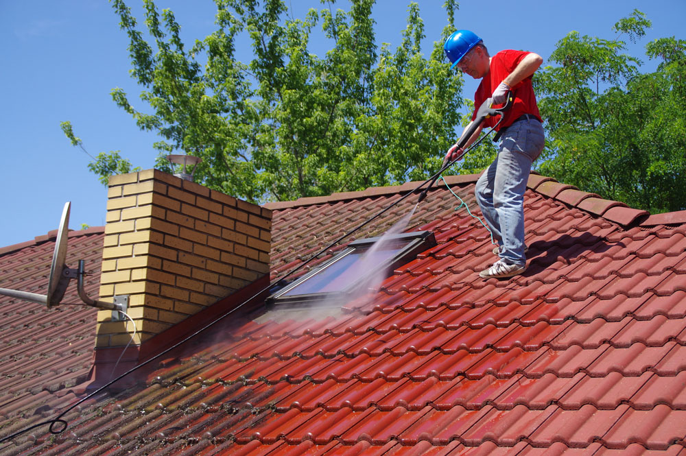
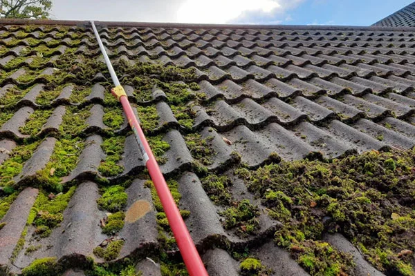

Storitev
Redno čiščenje streh in žlebov, da preprečimo težave z vodnim tokom.


Za izračun cene in več informacij nas kontaktirajte.

Redno čiščenje streh in žlebov, da preprečimo težave z vodnim tokom.
Za izračun cene in več informacij nas kontaktirajte.